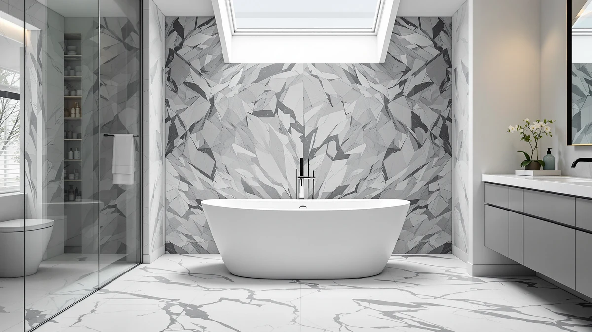

Delta Faucet Trinsic Floor Review (2026): Worth It?
Prices and picks verified as of October 2026. Independent, reader-supported reviews.


Quick Answer
This Delta Faucet Trinsic floor review points to the Trinsic Floor Mount as a reasonable pick for a freestanding tub filler if your bathroom already has rough-in plumbing for a floor-mounted valve. At $1,825.00, it sits close in price to the three freestanding tubs compared further down this page, and Delta's listing does not specify a material grade, so check the current Amazon page if finish composition matters for your installation.
Our pick: Delta Faucet Trinsic Floor Mount — $1,825.00 Check Price on Amazon
Bottom line: our top pick is the Delta Faucet Trinsic Floor Mount Tub Filler - Freestanding at $1,825.
Things to Know Before You Buy
- This Delta Faucet Trinsic floor review covers the Trinsic Floor Mount tub filler, listed at $1,825.00 through Amazon.
- The valve and spout assembly measures 6.75 by 16.75 by 46.50 inches, sized for a floor-mounted installation standing beside a freestanding tub.
- Delta's listing does not spell out a specific material grade beyond the brand name, so confirm finish composition on the current product page before ordering.
- A floor-mounted filler like the Trinsic needs rough-in plumbing below the floor, a different installation than a deck-mounted or wall-mounted faucet.
- The three alternatives compared later in this review are freestanding tubs, not competing faucets, so treat them as a pairing option rather than a direct substitute.
This Delta Faucet Trinsic floor review examines whether the Trinsic Floor Mount earns its $1,825.00 price next to three freestanding tubs you might pair it with during a bathroom remodel. Delta built its name on wall-mounted and deck-mounted faucets, and the floor-mount version of the Trinsic line targets a narrower buyer: someone who already has rough-in plumbing beneath the floor for a freestanding tub filler.
The listing identifies the brand as DELTA and prices the filler at $1,825.00, but it does not spell out a specific material grade beyond the brand name itself, so confirm finish composition on the current Amazon page before you order. The valve and spout assembly measures 6.75 by 16.75 by 46.50 inches, a size that matches a floor-mounted installation standing beside a tub rather than a wall-mounted spout reaching over the rim. Below, we walk through what the listing tells us, what it leaves out, and three freestanding tubs worth considering if you are still shopping for the tub itself.
Why You Should Trust Us
Best Freestanding Bathtubs is a research-first buying guide, and Ilane Tall, our home and bath editor, builds every comparison from verified pricing, published dimensions, and listing detail rather than a lab full of borrowed fixtures. We do not run a fake testing lab, and this Delta Faucet Trinsic floor review does not claim that anyone on our team installed or ran water through the Trinsic. Instead, we pulled the current Amazon price, the published dimensions, and the brand details from Delta's own listing, then checked them against what the three freestanding tubs below actually offer. When a listing skips a detail, such as the material grade here, we say so directly instead of guessing.
Our Research Experience
We did not install the Trinsic Floor Mount or run water through it ourselves. This Delta Faucet Trinsic floor review instead comes from comparing Delta's published listing against the three freestanding tubs covered further down this page, line by line: price, dimensions, brand, and the details each listing chooses to include or leave out. That research process means we flag the missing material grade here rather than filling the gap with marketing language borrowed from a similar Delta product. We also weigh the $1,825.00 price against the freestanding tub prices below, since a filler and a tub bought together make up the real cost of this kind of bathroom upgrade.
Overview & Specs

Delta Faucet Trinsic Floor Mount
What we like
- Carries the DELTA brand name, which is easier to source replacement parts for than a lesser-known faucet manufacturer.
- Built as a floor-mounted filler, matching the plumbing layout freestanding tubs typically require instead of a deck-mounted spout.
- Five listing images give you multiple angles of the valve and spout assembly before you commit to a rough-in that is expensive to change later.
Flaws but not dealbreakers
- At $1,825.00, it costs more than any of the three freestanding tubs compared in this review, so budget for the filler and the tub as separate line items.
- Delta's listing does not publish a specific material grade beyond the brand name, so confirm finish composition on the current product page before ordering.
| Material | — |
| Size | 6.75 x 16.75 x 46.50 inches |
The Trinsic Floor Mount is the version of Delta's Trinsic line built for freestanding tubs that need a filler to rise from the floor rather than a wall or deck. At 6.75 by 16.75 by 46.50 inches, the valve and spout assembly is sized to stand beside a tub and reach over the rim, a footprint that only works if your bathroom already has or can accommodate rough-in plumbing beneath the floor. This Delta Faucet Trinsic floor review treats that rough-in requirement as the first filter: if your plumbing is set up for a deck-mounted or wall-mounted faucet instead, this model is not a direct swap.
Priced at $1,825.00, the Trinsic Floor Mount sits well above the three freestanding tubs covered later in this review, each of which costs less than the faucet alone. Delta's listing names the brand clearly and includes five product images, but it stops short of listing a specific material grade, so if finish durability matters for your bathroom, verify it directly on the current Amazon page rather than assuming it matches other Trinsic finishes you may have seen elsewhere.
What We Liked
The clearest strength in this Delta Faucet Trinsic floor review is the brand name attached to the listing. DELTA is a faucet manufacturer with a long track record, and that matters for a floor-mounted filler, since replacement parts and finish-matched accessories are easier to track down than they would be for an unfamiliar brand. The five listing images also help you check the valve and spout proportions before committing to a rough-in that is costly to relocate once tile and flooring go in. At 6.75 by 16.75 by 46.50 inches, the published dimensions give you enough to plan clearance around a freestanding tub, more documentation than some floor-mounted fillers provide.
What Could Be Better
Price is the main drawback here. At $1,825.00, the Trinsic Floor Mount costs more on its own than any of the three freestanding tubs this review compares it against, so the total project cost climbs quickly once you add a tub to the filler. Delta's listing also does not spell out a specific material grade, which leaves a gap if you want to compare this finish's durability against a competing brand before buying. Anyone budgeting for a full freestanding tub installation should treat the filler and the tub as two separate, substantial expenses rather than assuming the tub will cost more.
Who Is It For?
This Delta Faucet Trinsic floor review points to one clear buyer: someone remodeling a bathroom around a freestanding tub who already has, or is willing to install, floor rough-in plumbing for the filler. It suits a buyer who values a recognizable brand name over the lowest possible price, since the three freestanding tubs below all cost less than this faucet by itself. If your bathroom plumbing is already set up for a wall-mounted or deck-mounted faucet, a floor-mounted filler like this one means additional plumbing work, so weigh that cost before adding the Trinsic to your cart.
Alternatives to Consider
The three products below are not competing faucets. They are freestanding tubs that pair with a floor-mounted filler like the Trinsic, useful if this Delta Faucet Trinsic floor review finds you shopping for the tub itself and not only the faucet. Each one costs less than the Trinsic Floor Mount on its own, so the tub is not necessarily the larger expense in a project that includes both.

Editor’s Pick
WOODBRIDGE 72"×35-3/8" Double Slipper Whirlpool&Air
At $1,804.99, this WOODBRIDGE double slipper tub costs slightly less than the Trinsic Floor Mount by itself, which puts the combined cost of a tub and filler for this pairing above $3,600. Its 72 by 35-3/8 inch footprint is the largest of the three freestanding tubs compared here, and the double slipper shape raises both ends of the basin, suiting two people sharing a soak better than a single-ended design. The whirlpool and air jet combination is a feature neither of the other two tubs in this comparison lists by name, so if jets are a priority, start here before finalizing a floor-mounted filler like the Trinsic.
$1,804.99
Check Price on Amazon
Best Value
WOODBRIDGE 66-1/2"×31-7/8" Spacious Whirlpool &
Priced at $1,788.13, this second WOODBRIDGE model is smaller than the double slipper above at 66-1/2 by 31-7/8 inches, a footprint worth checking against your bathroom's clearance before you commit to a floor-mounted filler that needs room to stand beside the tub. It shares the whirlpool feature with the larger model, so you are not giving up jets to save roughly $17 and some floor space. If the 72 inch double slipper above will not fit your room, this is the next size down from the same brand.
$1,788.13
Check Price on Amazon
Premium Choice
MEDUNJESS 65'' Resin Stone Free
The MEDUNJESS at $1,769.99 is the least expensive of the three freestanding tubs compared in this Delta Faucet Trinsic floor review, and at 65 inches it lands between the two WOODBRIDGE footprints above. It switches construction material to resin stone rather than the acrylic shells common in whirlpool tubs, which changes the weight and installation considerations for your contractor. If neither WOODBRIDGE model fits your layout or budget, this is the remaining option worth a look before you finalize plumbing for a floor-mounted filler.
$1,769.99
Check Price on AmazonDoes the Delta Faucet Trinsic Floor Mount require special plumbing?
Yes.
Why does the Trinsic Floor Mount cost more than the freestanding tubs in this comparison?
At $1,825.00, the Trinsic Floor Mount costs more on its own than any of the three freestanding tubs listed in this review, each priced under $1,810.
Frequently Asked Questions
Does the Delta Faucet Trinsic Floor Mount require special plumbing?
Yes. As this Delta Faucet Trinsic floor review notes, the Trinsic Floor Mount is a floor-mounted filler, which means it needs rough-in plumbing beneath the floor rather than through a wall or deck. If your bathroom is currently set up for a wall-mounted or deck-mounted faucet, switching to this model means additional plumbing work before installation.
Why does the Trinsic Floor Mount cost more than the freestanding tubs in this comparison?
At $1,825.00, the Trinsic Floor Mount costs more on its own than any of the three freestanding tubs listed in this review, each priced under $1,810. Faucet pricing for floor-mounted fillers often runs higher than tub pricing because of the valve mechanism and the brand premium attached to a name like DELTA, so budget for the filler and the tub as two separate expenses.
What does Delta's listing leave out about the Trinsic Floor Mount?
The listing does not publish a specific material grade beyond identifying the brand as DELTA in the product name. If finish durability or material composition matters for your installation, confirm it directly on the current Amazon product page rather than assuming it matches other finishes in the Trinsic line.
Final Verdict
This Delta Faucet Trinsic floor review comes down to plumbing compatibility and budget. The DELTA Trinsic Floor Mount is a reasonable pick at $1,825.00 if your bathroom already has rough-in plumbing for a floor-mounted filler and you want a recognizable brand name attached to it, but it costs more by itself than any of the three freestanding tubs it might pair with. If you are still shopping for the tub, too, check the WOODBRIDGE and MEDUNJESS options above before finalizing a budget that has to cover both the filler and the tub.